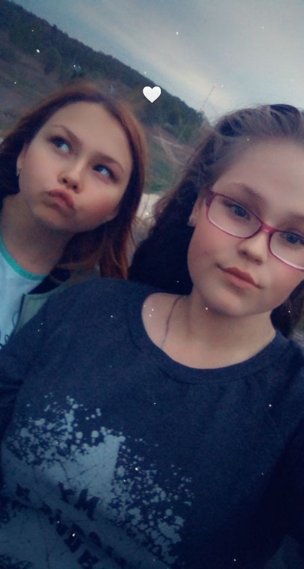

На первой фотографии я и моя подруга арина мы с ней ходили к её бабушке ,а потом прогулялись до школы

На второй фотографии Я и моя подруга и одноклассница Валерия . Мы с ней очень хорошие подруги, даже очень, мы с ней постоянно вечера прогуляваемся на часик полтора а потом идем по домам